How Success Works Green Guerillas: Revitalizing Urban Neigborhoods with Community Gardens (New York City, USA)
- Prepared by: Gerry Marten and Julie Marten
- Return to main How Success Works page
- View detailed description of this case
Downloads
- Download all lesson materials (ZIP; editable Microsoft Word and PowerPoint files).
Lesson Contents:
- Suggested Procedure (Lesson Plan)
- Narrative Handout (Short Version)
- Narrative Handout (Extended Version)
- Ingredients for Success Handout (Short Version)
- Ingredients for Success Handout (Extended Version)
- Ingredient for Success (Student Worksheet)
- Ingredients for Success (Teacher Key)
- Feedback Diagrams (Student Worksheet)
- Feedback Diagrams (Teacher Key)
- Ingredients for Success PowerPoint (Preview)
- Student-Centered How Success Works PowerPoint (Preview)
- Video (View and Download)
1. Suggested Procedures for “How Success Works” Lessons
- Prepared by Gerry Marten and Julie Marten (EcoTipping Points Project)
The lesson plan below provides a full menu for use from primary school to high school. Depending on the grade level and the unit of study that provides the context for a lesson, teachers can pick and choose from the steps below, tailoring the style of the lesson to the circumstances and changing the order of some of the steps if they wish. For example, if a lesson emphasizes “systems thinking,” it might proceed directly from a video or narrative handout (Steps 3-4) to feedback diagrams for that success story (Steps 8-9), and then create a “negative tip” feedback diagram for an issue that students identify from their local scene (Step 11), covering Ingredients for Success (Steps 5-7) later if desired. A very simple lesson, appropriate for primary school, might proceed directly from a story (Step 3 or 4), and reviewing the story, to exploring briefly what might be done about a local problem.
Step 1
Have students write a journal responding to the following prompt:
“Think of a time when something you or your family cared about was falling apart, or falling into decline (You can give examples: friendships, a project, a class, a job…) What did you do to try to turn things around? Did it work? How or how not? Do you think doing something else might have worked better?”
Step 2
After students have written their journals and shared back with the class, introduce the idea of communities being in decline, or falling apart, because of their relationship with their environment. Explain how these communities must change in order to sustain themselves, but knowing what to change is rarely clear or simple. Tell students that you will use the experience of a community that turned things around, from decline to restoration and sustainability, to learn lessons about what it takes to achieve that kind of success.
Step 3
Show a short video on one of the success stories to quickly introduce students to the basic concept of EcoTipping Points. The Apo Island case is a good choice to start. It is a compelling story with a simplicity that clearly reveals the basic concept. An effective way to introduce the video is to briefly:
- Explain the story setting and what will happen during the “negative tip” portion of the video, emphasizing what set decline in motion and what changed during decline.
- Ask students to watch for what the people in the story did to turn things around (what they did first, what they did next, what they did after that, and so on).
After seeing the video, students can work in small groups to list what the people in the story did first to turn things around, what they did next, and so on. The entire class can then go over it together. If the lesson will be continued in further detail, the teacher can tell students now that they understand what an EcoTipping Point is, they will look closely at a success story – perhaps the same as the video or perhaps another story – to identify the ingredients for success in that story and determine how decline was reversed. If the story selected for further study is a new one, the video for that story can be shown at this time, or it can be shown at the end of the lesson to pull the lesson together. The New York City community gardens story is a good one for American classes.
Step 4
A narrative handout can also be used for the selected story. There are two levels of the narrative available: a short version and an extended version, depending on the level of your course. The student worksheet comes with frontloaded vocabulary. Review the vocabulary with them to improve student comprehension and introduce key concepts of human ecology. It may be useful for students to underline those words when they read them. The vocabulary is also useful for assessment.
Step 5
Pass out a copy of the “Ingredients for Success” handout and review the meaning of each ingredient. There are two levels available: a short version and an extended version, depending on the level of your course. They come with frontloaded vocabulary for student comprehension. It may be useful, as you go over each ingredient, to ask students to share real life examples of what that ingredient might look like. This will help them, later, when they try to identify those ingredients in the case studies.
Step 6
Either individually, or in groups, have students read a narrative handout for the story and write bullet points onto their Ingredients for Success worksheet, listing examples of events, actions, or conditions in the story that they associate with each ingredient for success.
Step 7
When students have completed their work, it can be reviewed as a whole class with the teacher-led Ingredients for Success PowerPoint presentation. The PowerPoint presentation has comprehensive bullet-points that can be used as is or modified to meet your needs. On each slide there are also several photographs to help illustrate the information. There are also additional background notes for the instructor on the notes section of each slide, as well as the Ingredients for Success Teacher Key, which describes examples of each ingredient in the selected case. If you prefer to use a PowerPoint without any pre-written notes on the slides as your point of departure, an editable slide show (with photo captions in the notes section but no text on the slides themselves) is available for your use.
Step 8
After students have seen success in action, they can learn systems thinking to understand what drives decline, how turnabouts from decline to restoration work, and what drives restoration. Explain the following ideas:
- Tipping point – A “lever” (i.e., an action that sets dramatic change in motion).
- Negative tip – The downward spiral of decline.
- Negative tipping point – The action or event that sets a negative tip in motion.
- Positive tip – The upward spiral of restoration and sustainability.
- Positive tipping point (also called EcoTipping Point) – The action that sets a positive tip in motion by leveraging the reversal of decline. An EcoTipping Point is typically an “eco-technology” (in the broadest sense of the word, such as the marine sanctuary at Apo Island or community gardens in New York City), combined with the social organization to put that “eco-technology” effectively into use.
Step 9
Pass out a feedback-diagrams worksheet for the students to map out the vicious cycles driving the negative tip in the story, and the virtuous cycles driving the positive tip. There is also a Teacher Key for feedback diagrams with notes for teachers. Fill out the “negative tip” diagram together, noting the negative tipping point, drawing arrows between boxes, and writing the direction of change (increasing or decreasing) in each box. Then, turn to the “positive tip” diagram. After noting the EcoTipping Point as a starting point, let the students fill out the “positive tip” diagram on their own, and review the results as a class. Students should understand that they are not expected to come up with diagrams identical to the Teacher Key. While most of the arrows showing “what affects what” are obvious, others are a matter of interpretation. When students compare their “negative tip” and “positive tip” diagrams, they will discover that:
- One portion of the “positive tip” diagram is identical to the “negative tip” diagram,” except change is in the opposite direction (i.e., transformation of vicious cycles to virtuous cycles).
- The rest of the “positive tip” diagram is new virtuous cycles created by the positive tipping point. Those virtuous cycles help to lock in the gains.
Feedback diagrams look complicated at first glance, because most of us are less accustomed to looking at cause and effect cyclically. But students of all ages catch on very quickly. After you have gone through one worksheet together, most students find it no more difficult to understand than the basic cause and effect diagrams they already know. This diagram is just cyclical instead of linear!
Step 10
While this lesson plan suggests how to teach one success story at a time, the lesson can easily be modified to teach the stories collectively. For instance, small groups could be designated to identify the Ingredients for Success in different stories and then teach the “Ingredients for Success” PowerPoint for their story to the class. Students could jigsaw the stories, or use the Student-Centered How Success Works PowerPoints to explore the cases independently. For each of the How Success Works flagship cases there is an editable PowerPoint slide show containing photos about the story. These PowerPoint files contain no bullet points or other text information on the slides themselves, but in the notes section of each slide there is a caption that briefly describes the photo and its role in the story. These Student-Centered How Success Works slide shows can be used for any level of K-12 and beyond as a base for students to explore and teach a success story within the parameters of their grade level and the teacher’s content focus and desired outcome. Students can build their own presentations for (a) teaching other students about the case, (b) using the photos as background for a creative retelling of the community’s experience, or (c) another task that suits the specificity of your classroom. The notes already in the slides can serve as a guide for students to research additional information from that case’s video, written narratives, “Ingredients for Success” PowerPoint, and feedback diagrams.
Step 11
The same procedures that were applied to investigating EcoTipping Points success stories can be applied to an issue that students identify from their local scene:
- Students think of issues, involving things in decline, and select an issue for EcoTipping Points analysis.
- They prepare a “negative tip” feedback diagram for the issue to clarify what is driving decline.
- They examine their “negative tip” feedback diagram for elements that could be modified to set positive change in motion. They brainstorm possible actions (i.e., EcoTipping Points) for leveraging the change.
- They run through the Ingredients for Success to consider how each ingredient might contribute to making the actions more effective, and they devise additional Ingredients for Success that could be helpful for dealing effectively with their issue.
As with lessons built around EcoTipping Point success stories, it is not necessary for students to follow all of the steps above when exploring a local issue. They can focus on feedback diagrams, Ingredients for Success, or both.
2. Narrative Handout (Short Version)
New York City’s Green Guerillas: Revitalizing Urban Neighborhoods with Community Gardens
New York City is famous the world over for its grandeur and liveliness. However, it has also been known for its slums with abandoned buildings, vacant lots, drug dealing, high crime rates, and harsh living conditions. The Bowery, in the heart of Manhattan’s Lower East Side, is an example. It had been a disreputable and shabby part of the city for about a century, but it got worse in the 1960s, when New York City’s government responded to a financial crisis by drastically reducing services. Public safety deteriorated as one police station and fire station after another was closed. People and local businesses started to move out. Many landlords stopped keeping up their properties, crime got worse, and more people moved out, leaving entire buildings vacant. Some of the buildings were torn down, and landlords stopped paying property taxes. Worthless, rundown buildings and vacant lots became City property. The downward spiral seemed impossible to escape.
In the spring of 1973, the tide began to change. College students and artists had recently been moving into the Bowery to take advantage of low rents, and one new resident, Liz Christy, saw the vacant lots filled ten feet high with trash as both a danger to the community and an opportunity for change. She brought in a group of friends, and together they started cleaning up an abandoned lot and turning it into green space. They spent the next three months hauling trash, leveling the gravel underneath, and trucking in fresh soil. Using horse manure from a nearby mounted police station as fertilizer, they made sixty raised garden beds, and began planting. The neighbors, mostly Hispanic and African-American, were initially skeptical, but soon they started pitching in with both work and their ideas about what they needed from a garden.
The City government, which was not used to the idea of a local community taking over public property that way, threatened the gardeners with trespassing charges and eviction. However, newspaper articles about the garden aroused public sympathy, and the gardeners were able to rally enough support to lease the lot from the City for a dollar a year.
The gardeners called themselves the “Green Guerillas.” They were very democratic. Everyone who participated in the garden had a voice in running it. They set strict rules of organic farming, no drug dealing, and responsibility to maintain one’s gardening plot. Since they chose plants that would grow easily in New York, they produced armloads of vegetables like tomatoes and cucumbers within a few months. They were able to see and eat the fruits of their labor, and soon everyone in the neighborhood appreciated the benefits of a community garden for their inner-city neighborhood, where there was no other place for gardening. The garden was an attractive gathering place for community events, entertainment shows, instructional classes, and simply relaxing outdoors. It provided refuge from the crime-infested streets, and it supplied work and food for unemployed neighborhood residents.
This new idea spread like wildfire. With Liz Christy’s energy, inspiration, and strong leadership, the Green Guerillas helped other neighborhoods around New York City to begin their own gardens. In 1979, the City created a “Green Thumb” program to help neighborhoods set up new gardens, and Cornell University’s cooperative extension program provided gardening experts who assisted the gardeners with technical advice.
Each new garden reflected the incredible cultural diversity of New York City. Immigrants from other parts of the country and world shaped their gardens to grow the foods and animals they wanted, and they brought their knowledge and memory of how to farm and control garden pests organically into this new urban experiment. As trash-filled lots evolved into thriving urban oases, the birds, insects, and other pollinators attracted to these green spaces literally spread plants across the city. Soon cities around the nation were taking up the community gardens movement, and some European countries started to follow their example as well!
There were about 800 community gardens by the mid-1980s. They were not only a source of nutrition and beauty for the neighborhood, but also a great source of achievement and neighborhood pride for the people who created them. Success united the community and gave local people the confidence and courage to take action to improve their neighborhoods which surrounded the gardens. As the neighborhoods became more desirable, people started moving in. More people on the streets, in a unified community, helped control trash and crime and soon made neighborhoods with community gardens a profitable location to open up shops.
These were all tremendous benefits, but they also increased property values so much that, in the late-1980s, the City decided to start selling off vacant lots in the recently restored neighborhoods to real estate developers. Many of those lots had gardens, but the City had not anticipated how the people would respond. Community gardeners around the city, who considered their garden to be a sacred place which must not be violated, united to form the “New York Garden Preservation Coalition,” and the battle was on. With public support and involvement of community members with experience in law, public relations, and other valuable skills, the City was forced to stop selling garden lots to developers, and instead sold many of them at a low price to non-profit organizations dedicated to preserving the gardens. In the end, they were able to save six hundred gardens, which are legally protected from destruction and continue contributing to the vitality of many New York neighborhoods.
3. Narrative Handout (Extended Version)
New York City’s Green Guerillas: Revitalizing Urban Neighborhoods with Community Gardens
- Authors: Gerry Marten and Amanda Suutari
- See the detailed source document on which this article is based
During the city government’s financial crisis in the 1960s-1970s, large sections of New York City were abandoned by landlords and city officials. Residents revitalized their neighborhoods, reclaiming them from decay by turning vacant lots into community gardens. More than 800 gardens tipped depressed neighborhoods away from crime and squalor to community action, better diets, and healthier, more desirable urban environments. The gardens trained a generation of activists and spawned other environmental projects in New York City and elsewhere.
New York City is famous the world over for its grandeur. It represents to many the promise of America, drawing millions of visitors each year. However, alongside the splendor, there has also been blight – New York’s slums. It is here that abandoned buildings and vacant lots have become breeding grounds for gangs and drug dealers. With notorious crime rates and nearly uninhabitable conditions, it has sometimes been difficult to imagine that these neighborhoods ever showed vitality or growth. This was particularly so for the Bowery, an iconic historical area in the heart of Manhattan’s Lower East Side.
Stepping back to the 1700s, the Bowery was originally an agricultural district south of the emerging downtown. A nearby lake, known as Collect Pond, was a favorite fishing spot, and the Bowery was particularly notable for its Teawater Garden resort, which took its name from a local freshwater spring. At that time, people equated walking through the neighborhood to taking a stroll through a beautiful garden.
Urban decline
Unfortunately, by the end of the 1700s the Bowery began to decline. Pollution was accumulating as local manufacturers increased production and waste. Collect Pond became so polluted by breweries and slaughterhouses that the City deemed it unsanitary and filled it in. The farms that once spread for miles were covered over by city streets, and the population exploded. By the late 1800s, after the City built an elevated railroad along both sides of Bowery Street, the buildings became trash dumps and flophouses and crime flourished.
During the 1960s and early 1970s, New York City’s government responded to a financial crisis by cutting services to the Bowery. Public safety deteriorated as one police station and fire station after another was closed. People moved out, leaving entire buildings vacant. Many landlords stopped maintaining their properties, which then reverted to the City when taxes were left unpaid. The downward spiral seemed impossible to escape.
Transforming vacant lots from eyesores to oases
However, the tide began to turn in the spring of 1973 – a change triggered by a small event involving Liz Christy at a vacant lot on the northeast corner of Bowery and East Houston. Christy was a recent resident of the Bowery, an artist who saw the run-down neighborhood as a living canvas. The lot was piled ten feet high with trash. One day Christy saw a child playing in an abandoned refrigerator there, and she complained to the child’s mother that it wasn’t safe. The mother responded that Christy should do something about it herself if she was so concerned. Within weeks, Christy assembled her friends, largely college students who had recently moved into the neighborhood, and they began to clean up the lot.
The volunteers spent the next three months hauling trash, leveling the gravel underneath, and trucking in fresh soil. Then, using horse manure from a nearby mounted police station as fertilizer, they made sixty raised garden beds, and began planting. The neighbors, mostly Hispanic and African-American, were initially skeptical of these white kids in hippie clothes, but as they saw the Bowery Houston Community Farm Garden take shape, they could not resist pitching in. Within a few months, as they produced armloads of tomatoes and cucumbers, the gardeners were able to see, and eat, the fruits of their labor.
The city government reacted to these interlopers on City property by moving to shut them down. However, stories in New York’s Daily News mobilized so much public sentiment in support of the gardeners – who called themselves the “Green Guerillas” – that the City decided to lease the lot to them for just a dollar a year.
Soon Christy found herself working full-time consulting with other neighborhood groups to set up gardens. And by 1978, she was collaborating with a City Parks Department program called Green Thumb, which offered plants, tools, and horticultural advice to community gardeners. Cornell University’s cooperative extension program added its expertise to provide technical advice to gardeners.
Each garden was governed by the gardeners themselves, creating a sense of group ownership and responsibility. They tailored each garden to fit the needs and unique character of the surrounding neighborhood. Just as biodiversity makes an ecosystem stronger, the gardens benefited from the gardeners’ diversity of ages, occupational and ethnic backgrounds, skills, and ideas. Immigrants from various nations contributed crops and horticultural expertise from their homelands. Some gardens offered space for recovering drug addicts, some for youth to paint murals as an alternative to graffiti.
The members of each garden formulated simple but firm rules. Every gardener was assigned a plot, instilling a sense of personal ownership, and they were required to maintain an active garden on the plot. Neglected plots were assigned to someone else. Additional rules concerned respect for other people’s plots. Anyone who continued to be disruptive after a warning was expelled. The use of herbicides, pesticides or fungicides was discouraged, and there was an enormous amount of composting.
A survey by Green Thumb found the gardeners were growing over $1 million worth of produce each year upon 200 acres of land. And 75 percent of the garden groups were able to give some of their harvest to food banks and hungry neighbors.
Restoring urban neighborhoods
But the gardens offered much more than food. They provided islands of shade and cooling in the long, hot Manhattan summers. A single acre could absorb up to two tons of sulfur dioxide, a major threat to people’s respiratory health and the main component of acid rain. The diversity of crops, flowers, shrubs, and trees created habitats for a variety of birds, insects, and other wildlife. One beekeeper alone was able to produce over 100 pounds of honey a year.
And most important, the once blighted vacant lots were transformed into vibrant, attractive community gathering spaces or “outdoor community centers.” The green space reduced stress among local residents, boosting both mental and physical health. Weddings, birthdays, cookouts, music fests, dramas, and political rallies became regular social events in the gardens, which also hosted science lessons for school children. The result was community pride, stronger ties among neighbors, and a shared mentality that no longer tolerated shabbiness and crime.
Each urban oasis inspired other neighborhoods to follow its example. As one garden led to another, the progression of urban decay began to slow, and finally reverse – at a fraction of the cost of conventional urban renewal. Once the gardens were functioning, nature did much of the work to improve food quality, air quality, and the appearance of the neighborhood. People started moving into formerly depressed neighborhoods, landlords put more into maintaining their buildings; local businesses returned; the City gained tax revenue; and government services improved. At the height of the movement, in the late 1980s, the city hosted more than 800 homegrown gardens.
And the concept spread. The U.S. Department of Agriculture began to realize what an innovative idea this was, and supported the growth of urban gardens in 22 additional cities across the country. Visitors to New York from other cities, and other parts of the world (e.g., France, China and Sweden), learned how to start community gardens, taking the information and inspiration back home.
Overcoming a challenge
Then came a setback. The very success of New York City’s community gardens became a threat to their existence. As neighborhoods with gardens became more desirable, city officials began to eye the garden lots to sell for private development. At first, in the late 1980s, a few of the gardens were leveled for the development of low-income housing, but by 1994, when Rudolph Giuliani was mayor, a full-scale plague of bulldozers descended upon the gardens. Rather than supporting housing for the poor, the lots were sold to upscale real estate developers. The plan was gentrification.
But Giuliani had miscalculated. He underestimated the deep roots that the gardens had established in New Yorkers’ hearts. And he unwittingly united the gardeners by threatening all of them at the same time. Gardeners across the city formed the New York Garden Preservation Coalition, and the battle was on. While some took to the streets and spoke to the media, others joined the battle in the courtroom with help from state Attorney General Eliot Spitzer. In the end, Giuliani’s successor came to the negotiating table, and some 600 gardens were saved. Several non-profit organizations helped to secure the gardens’ future by purchasing many of the garden lots from the City.
What was novel about this generation of green spaces was that they were not planned by City Hall, but rather sprang up, literally, from the streets. Desperate neighbors, fed up with waiting for the City’s help, launched their own urban back-to-the-land movement. Residents revitalized their neighborhoods, reclaiming them from decay. The gardens trained a generation of activists and spawned other environmental projects.
This 35-year saga is an example of an EcoTipping Point, demonstrating how positive action that truly connects to people’s lives can set in motion dramatic changes for the better. The Green Guerillas interrupted a catastrophic vicious cycle. They took one part of their urban environment – a vacant lot – and transformed it into a community resource that offered people an opportunity to do things for themselves. Instead of moving out, people started moving back in. As the upward spiral gained momentum, it overpowered the forces that were driving decline, and ultimately, the community and its urban environment were functioning sustainably together.
In a time when too many systems are tipping the wrong way, New York’s success challenges our fear that ecological dilemmas are too big, too costly, and too complicated to solve. EcoTipping points show that it is not only possible to live in harmony with our environment, it is achievable.
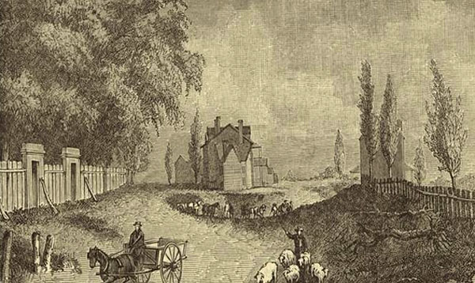
Bowery and Broadway in 1831 (later known as Union Square).
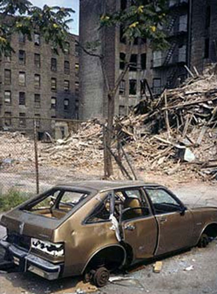
Empty buildings in the Bowery (1973).
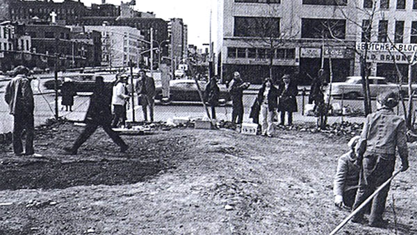
Making the first garden.
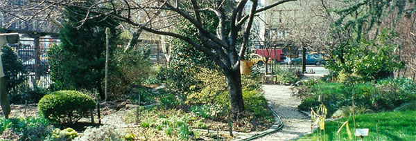
The Liz Christy Memorial Garden.
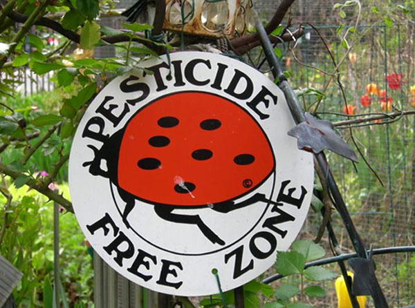
The “No Pesticide” policy.
Turtles and goldfish in a garden pond.
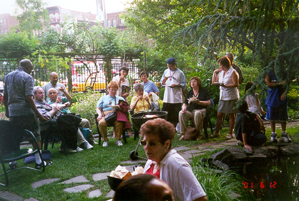
Enjoying a barbeque.
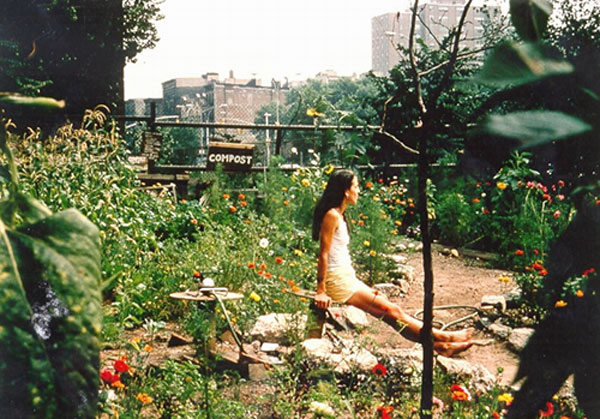
Tranquility in a bustling city.
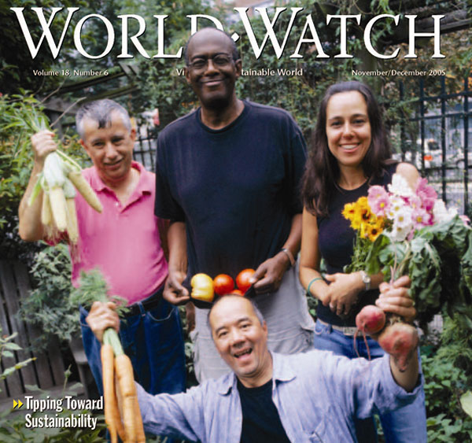
Proud gardeners display their bounty.
4. Ingredients for Success in EcoTipping Point Case Studies (Short Version)
Shared community awareness and commitment.
Strong democratic institutions and genuine community participation are prominent in EcoTipping Point stories. The community moves forward with its own decisions, manpower, and financial resources, so everyone feels a sense of ownership for community action.
Outside stimulation and facilitation.
Outsiders can be a source of fresh ideas and encouragement. A success story typically begins when people or information from outside a community stimulate a shared awareness about a problem and introduce game-changing ideas for dealing with it.
Enduring commitment of local leadership.
Trusted and persistent leaders inspire the deep-rooted and continuing community commitment and participation necessary to reverse the vicious cycles driving decline.
Co-adaptation between social system and ecosystem.
Social system and ecosystem fit together, functioning as a sustainable whole. When one gains, so does the other.
"Letting nature do the work."
EcoTipping Points create the conditions for an ecosystem to restore itself by drawing on nature's healing powers.
Rapid results.
Quick "payback" and something that can stand as a symbol of success help communities stay committed to change.
Key Symbol.
Something that serves as inspiration or stands for success in a way that helps communities stay committed to change.
Overcoming social obstacles.
Overcoming social, political, and economic obstacles that could block positive change.
Social and ecological diversity.
Greater diversity of people, ideas, experiences, and environmental technologies provide more choices and opportunities, and therefore better chances that some of the choices will be good.
Social and ecological memory.
Learning from the past adds to diversity and often points to choices that were once sustainable. Ecosystems contain "memory" of nature's design for sustainability.
Building resilience.
"Locking in" sustainability by creating the ability to adapt and deal with new (and often unexpected) conditions that threaten sustainability.
Vocabulary
- Stimulation: To excite activity or growth.
- Social System: Everything about a human society, including its organization, knowledge, technology, language, culture, and values.
- Ecosystem: All the living things (plants, animals, microorganisms) and their environment at a particular place.
- Restoration: A return of something to its original, unharmed condition.
- Facilitation: Helping to make something easier or happen successfully.
- Institution: An established pattern of behavior or relationships in a particular society.
- Co-adaptation: Two or more things adjusting to each other and fitting together so they function well.
- Obstacles: The people, things, or events that can block our way.
- Diversity: Variety (many things different from each other).
- Resilience: The ability to return to an original form after severe stress or disturbance.
5. Ingredients for Success in EcoTipping Point Case Studies (Extended Version)
What does it take to turn around the vicious cycles driving environmental decline? Basically, it takes appropriate environmental technology combined with the social organization to put it effectively into use. More specifically, EcoTipping Point case studies have consistently shown that the following ingredients are keys to success.
Shared community awareness and commitment.
Strong democratic institutions and genuine community participation are prominent in EcoTipping Point stories. These stories do not typically feature top-down regulation or elaborate development plans with unrealistic goals. Of particular importance is a shared understanding of the problem and what to do about it: Shared recognition of why the problem has occurred, shared vision and knowledge of what can be done to set a turnabout in motion, and shared ownership of the community action that follows. The community devises an effective procedure for making this shared understanding a reality. It draws upon its collective experience and moves forward with its own decisions, manpower, and financial resources.
Outside stimulation and facilitation.
We seldom see EcoTipping points "bubble up from within." Outsiders can be a source of fresh ideas and encouragement. While action at the local level is essential, a success story typically begins when people or information from outside a community stimulate a shared awareness about a problem and introduce game-changing ideas for dealing with it. EcoTipping Point success stories will become more common only with explicit programs to provide this kind of stimulation to local communities.
Enduring commitment of local leadership.
Persistence is a key to success. A turnabout from decline to restoration seldom comes easily. It requires community commitment to apply an EcoTipping Points lever with sufficient force to reverse the vicious cycles driving decline. Trusted and persistent leaders inspire the deep-rooted and continuing community commitment and participation necessary for success.
Co-adaption between social system and ecosystem.
Social system and ecosystem fit together, functioning as a sustainable whole. As an EcoTipping Point story unfolds, perceptions, values, knowledge, technology, social organization, and social institutions all evolve in a way that enhances the sustainability of valuable social and ecological resources. Social and environmental gains go hand in hand. "Social commons for environmental commons" are developed, including clear ownership and boundaries, agreement about rules, and enforcement of rules.
"Letting nature do the work."
Micro-managing the world’s environmental problems is far beyond human capacity. EcoTipping Points give nature the opportunity to marshal its self-organizing powers to set restoration in motion.
Rapid results.
Quick "payback" helps to mobilize community commitment. Once positive results begin cascading through the social system and ecosystem, normal social, economic, and political processes took it from there.
A powerful symbol.
It is common for a prominent feature of the local landscape – or some other key aspect of an EcoTipping Point story – to represent the entire process in a way that consolidates community commitment and mobilizes community action to carry it forward.
Overcoming social obstacles.
The larger socio-economic system can present numerous obstacles to success on a local scale. For example:
- It imposes competing demands for people’s attention, energy, and time. People are so "busy," they don’t have time to contribute to the "social commons."
- People who feel threatened by innovation or other change take measures to suppress or nullify the change.
- Outsiders try to take over valuable resources after the resources are restored.
- Dysfunctional dependence on some part of the status quo prevents people from making changes necessary to break away from decline.
Social and ecological diversity.
Greater diversity provides more choices and opportunities – and better prospects that some of the choices will be good. For example, an ecosystem’s species diversity enhances its capacity for self-restoration. Diversity of perceptions, values, knowledge, technology, social organization, and social institutions provide opportunities for better choices.
Social and ecological memory.
Social institutions, knowledge and technology from the past have "stood the test of time" and may have something to offer for the present. Nature’s "memory" exists in the resilience of living organisms and their intricate relationships in the ecosystem, which have emerged from the time-testing process of biological evolution.
Building resilience.
“Resilience" is the ability to continue functioning in the same general way despite occasional and sometimes severe external disturbance. EcoTipping Points are most effective when they not only not only set in motion a course of sustainability, but also enhance the resilience to withstand threats to sustainability. As EcoTipping Point stories play themselves out, new virtuous cycles emerge to reinforce and consolidate the gains. A community’s adaptive capacity – its openness to change based on shared community awareness, prudent experimentation, learning from successes and mistakes, and replicating success – is central to resilience.
Vocabulary
- Stimulation: To excite activity or growth.
- Social System: Everything about a human society, including its organization, knowledge, technology, language, culture, and values.
- Ecosystem: All the living things (plants, animals, microorganisms) and their environment at a particular place.
- Restoration: A return of something to its original, unharmed condition.
- Facilitation: Helping to make something easier or happen successfully.
- Institution: An established pattern of behavior or relationships in a particular society.
- Co-adaptation: Two or more things adjusting to each other and fitting together so they function well.
- Obstacles: The people, things, or events that can block our way.
- Diversity: Variety (many things different from each other).
- Resilience: The ability to return to an original form after severe stress or disturbance.
6. Ingredients for Success: New York City Community Gardens (Student Worksheet)
Instructions: This worksheet will help you to identify the Ingredients for Success in a real situation. First review the Vocabulary needed for this success story. Second, read the success story, underlining the new vocabulary as you go. Finally, write on your worksheet a bullet-point list of elements in the story that are examples of each ingredient for success. For instance, if someone from another city introduced a new idea or helped get a project going, you could put a phrase or sentence about that under ‘outside stimulation and facilitation.’ Be as SPECIFIC as possible. You should have at least one example for each ingredient, though for some you may have many!
Vocabulary
- Vacant Lot: An area that used to contain a building or house, but was abandoned.
- Public Services: services governments provide people for their welfare and safety.
- Urban: Having to do with cities.
- Community Garden: A garden belonging to and worked by a whole community instead of individuals.
- Property Value: How much property in an area is worth.
- Violate: to harm or not show respect.
- Vitality: Liveliness and strength.
Student Responses
- Shared community awareness and commitment
- Outside stimulation and facilitation
- Enduring commitment of local leadership
- Co-adaption between social system and ecosystem
- “Letting nature do the work”
- Rapid results
- A powerful symbol
- Overcoming social obstacles
- Social and ecological diversity
- Social and ecological memory
- Building resilience
7. Ingredients For Success: New York City Community Gardens (Teacher Key)
Shared community awareness and commitment.
Strong democratic institutions and genuine community participation are prominent in EcoTipping Point stories. Of particular importance is a shared understanding of the problem and what to do about it, and shared ownership of the action that follows. Communities move forward with their own decisions, manpower, and financial resources. The Green Guerillas, helped different neighborhoods to organize and design their own green spaces, depending upon their preferences (e.g., neighborhoods with many children or with many elderly people; or neighborhoods with ethnic groups who wanted to grow vegetables not available in local stores). Over the years it was discovered that gardens created by outside agencies (e.g. the Department of Housing and Urban Development) and then handed over to local residents fell into disrepair after a short time. Only those in which decision-making and leadership emerged from the community were successful. In contrast to public parks, people developed a sense of ownership in gardens where they themselves worked. People say to themselves, "I planted that tree, I put in that bench, I grew this zucchini." After community organizations were successful with gardens, they expanded their attention to many other projects to improve their neighborhoods.
Outside stimulation and facilitation.
Outsiders can be a source of fresh ideas. While action at the local level is essential, a success story typically begins when people or information from outside a community stimulate a shared awareness about a problem and introduce game-changing ideas for how to deal with it. Artist Liz Christy was a newcomer to the rundown Bowery neighborhood, and there was an influx of young college students seeking lower rents in an otherwise expensive city. Christy brought in a group of friends to help clean a single vacant lot and turn it into a garden. People had wanted to do something like this, but needed a "spark" to get it going. Once the community gardening movement was underway, Cornell University (New York's Land Grant college) provided technical support for expanding the gardening network.
Enduring commitment of local leadership.
Trusted and persistent leaders inspire the deep-rooted and continuing community commitment and participation necessary for success. The Green Guerillas were formed in the 1970s and still exist today. Christy's personality, dedication, and leadership skills were crucial to the organization's success in the early years. A broad base of leadership and community commitment was crucial for spreading gardens throughout the city during the following decades and saving the gardens by mounting a community campaign when New York City's municipal government tried to sell off the garden lots in the early 1990s.
Co-adaption between social system and ecosystem.
Social system and ecosystem fit together, functioning as a sustainable whole. Communities create a "social commons" to fit their "environmental commons." By working as a community, neighborhood residents were able to create a healthier urban environment. The idea of community gardens fit well with an urban population in need of green space and places to congregate and socialize. Many people were also unemployed and in need of work and healthy food. As the neighborhood ecosystem changed, people began to recognize it as a source of nutrition. As neighborhood quality improved, people began to take pride in it and dedicated themselves to improving it even further. Garden rules were important (e.g., no drug dealing, respect for others, maintaining an active garden in one's assigned plot, and using organic methods), as well as penalties for breaking the rules, which were mild for small infractions and stronger for more serious infractions. The gardens evolved to fulfill more social needs: food pantries, community organizing, stages for performances, classrooms.
"Letting nature do the work."
EcoTipping Points give nature the opportunity to marshal its self-organizing powers to set restoration in motion. Plants were chosen that grew well in New York without intensive artificial inputs. Manure from police horses and compost from local households provided natural fertilizers, ensuring high soil quality and making it unnecessary to use chemical fertilizers. While starting a garden is labor-intensive, once nature took over it produced many benefits that might have cost even more labor: reducing crime; providing food; improving environmental quality and the appearance of the neighborhood; creating a community meeting place.
Rapid results.
Quick "payback" helps to mobilize community commitment. Removing the garbage from a vacant lot and creating a green space took only a few weeks or months. Small, early successes, such as delicious food and attractive flowers, stimulated further efforts toward success. One growing season was enough to have an impact on the local neighborhood. A prominent article in the newspaper spread the idea, and other gardens began to spring up through local community effort. These in turn inspired others. The community garden movement spread to other U.S. cities (e.g., Boston and Chicago) and even to European cities (London, Paris, Rome).
A powerful symbol.
It is common for prominent features of EcoTipping Point stories to serve as inspirations for success, representing the restoration process in a way that consolidates community commitment and mobilizes community action. Liz Christy, a charismatic and energetic leader, became a powerful symbol of the Green Guerilla movement. The gardens became sacred spaces with an emotional attachment for the people who created them. They also became symbols of community pride and self-sufficiency.
Overcoming social obstacles.
The larger socio-economic system can present numerous obstacles to success on a local scale. Initially the "guerilla gardeners" were threatened with trespass charges and evictions for occupying vacant lots. To the city government, the concept of the public taking over property was alien. But the gardeners were able to rally public opinion and eventually to negotiate very affordable leases. Years later, when property values increased, developers began to eye the "vacant" lots, and the city started to sell them, the gardeners were able to form a coalition to secure the long-term status of most of the gardens. Later, federal funding and the city's Green Thumb program strengthened the community gardens movement.
Social and ecological diversity.
Diversity provides more choices, and therefore more opportunities for good choices. Because the gardens were managed by neighborhood organizations, they reflected the great diversity of cultures in New York City. The Hispanic gardens had chickens and goats; the Chinese gardens had religious symbols. The neighborhoods also developed various approaches to problems such as garden pests. Ecologically, a more diverse landscape is more pleasing for the urban residents. Besides introducing a variety of useful and colorful vegetation where once only weeds grew, the gardens attracted birds and insects that served as pollinators for plants throughout the city.
Social and ecological memory.
Learning from the past adds to the diversity of choices, including choices that proved sustainable by withstanding the "test of time." For example, the early gardens in low-income neighborhoods reflected a diversity of cultural heritages. Immigrants from the Caribbean and African Americans from the South put their "social memory" to work, recreating gardens that featured the flavors of home. Not only farming techniques, but also skills that the gardeners brought from varied backgrounds – such as public relations, fundraising, teaching, law, and other professions – contributed to the gardens' success. Ecologically, the soil, which had been used to produce crops in earlier centuries, may have retained some of its agricultural capacity from earlier years.
Building resilience.
"Resilience" is the ability to continue functioning in the face of sometimes severe external disturbances. The key is adaptability. The gardens were sacred public spaces, where (unlike a vacant lot) it was "taboo" to dump trash. The community solidarity and social cohesion that developed around them allowed residents to defend their gardens and to take action on other issues affecting their neighborhoods such as crime and trash. A positive feedback loop developed in which better neighborhood quality led to more community pride and commitment, and attracted more residents. More people on the streets reinforced control of crime, illegal dumping, etc. and stimulated more shops to open, which in turn improved neighborhood quality. As some of the neighborhoods evolved from low-income to higher-income districts, the gardens evolved to include low-maintenance plants as a place to relax rather than grow food. When the city government started to sell off garden lots to developers, the gardeners had the experience, neighborhood pride, organization, and confidence to engage successfully in the public opinion and legal battles that saved most of the gardens.
8. New York City Community Gardens Feedback Diagrams (Student Worksheet)
Diagram for students to fill in
Instructions: Fill in the blanks in the boxes, writing “more” to indicate an increase during the story’s period of decline, or “less” to indicate a decrease during that period. Draw arrows between boxes to show which factors were affecting other factors strongly enough to cause their increase or decrease. There should be at least one arrow pointing away from each box and at least one arrow pointing into each box. Finally, trace circular patterns of the arrows that represent “vicious cycles” that were set in motion by the negative tipping point and driving decline.
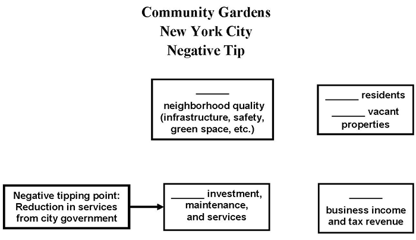
Diagram for students to fill in
Instructions: Fill in the blanks in the boxes, writing “more” to indicate an increase during the story’s period of restoration, or “less” to indicate a decrease during that period. Draw arrows between boxes to show which factors were affecting other factors strongly enough to cause their increase or decrease. There should be at least one arrow pointing away from each box and at least one arrow pointing into each box. Finally, trace circular patterns of the arrows that represent “virtuous cycles” that were set in motion by the positive tipping point and helped to drive restoration.
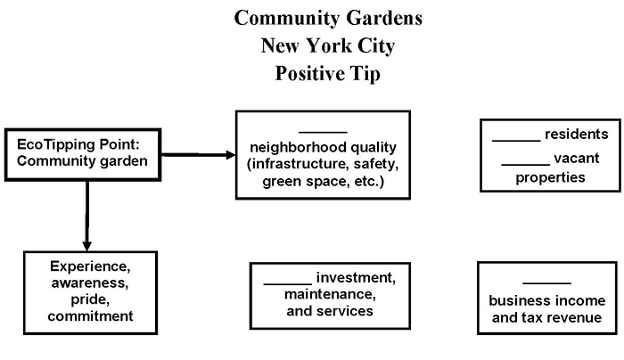
9. New York City Community Gardens Feedback Diagrams (Teacher Key)
This story is about urban decay and restoration in New York City’s Bowery District. A fiscal crisis in city government during the 1960s precipitated the negative tipping point: a reduction in services (e.g., police and fire protection) in the already depressed Bowery. A system of interconnected and mutually reinforcing vicious cycles was set in motion by the cascade of effects that followed:
- Reduction in public services led to a deterioration of public infrastructure and safety, causing people to move away.
- Fewer people on the streets and more vacant properties led to garbage dumping, criminal activity, and homeless beggars, with further deterioration of public safety and more people moving away.
- Less income for local businesses and less tax revenue for city government led to even less expenditure by city government, landlords, and local businesses for maintenance of buildings and other infrastructure. Buildings and streets fell into disrepair, contributing to further neighborhood deterioration, and more people moved away.
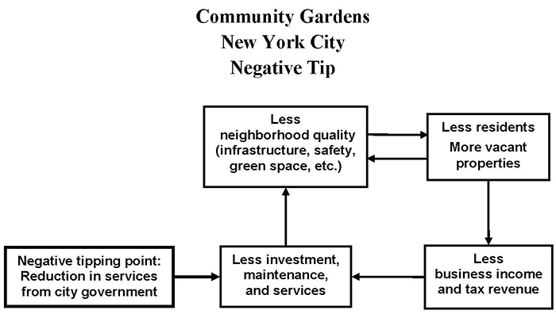
The positive tipping point began in 1973 when a young artist named Liz Christy saw a small boy playing in a trash-filled, rat-infested vacant lot and she decided to do something about it. She organized some friends to haul out the garbage and truck in soil to establish the Bowery Houston Community Farm Garden.
At first skeptical, the mostly African-American and Hispanic neighbors began to pitch in, and within a few months they were taking home armloads of tomatoes and cucumbers. Besides displacing rats and drug dealers, and creating a much needed green space, the garden also became an “outdoor community center.”
As can be seen in the diagram below, the garden served as the EcoTipping Point that reversed the vicious cycles described above. The vicious cycles of the negative tip were transformed into virtuous cycles (shown in black below):
- The improvement in neighborhood quality – public safety, buildings and other infrastructure, visual attractiveness, and community spirit – attracted people to move into the neighborhood. More residents meant even more people on the streets and even greater public safety.
- More residents and fewer vacant properties meant more business income and tax revenue, leading to investment in neighborhood restoration.
- More income and tax revenue also increased public and private services, further contributing to neighborhood quality.
- At the same time, a new virtuous cycle of “success breeds success” (shown in blue) arose around the garden, which served as a symbol for improving the neighborhood. The success of the garden, experience with managing it, and improvements in neighborhood quality instilled awareness, pride, and commitment to improving both the garden and the neighborhood even further.
Once news of the garden’s success spread, an entire movement developed. Neighboring neighborhoods established gardens, and in 1978 the city parks department began the Green Thumb program which offered plants, tools, expertise, and $1-per-year leases to community groups. By the late 1980s New York City was home to over 800 community gardens. They even attracted international attention, with people from as far away as China and Sweden visiting to learn how to start community gardens.
Most important, new virtuous cycles “locked in” the benefits. When property values in neighborhoods with gardens increased, the city government tried to sell garden lots for development. However, the pride and commitment of neighborhood residents, as well as experience and organizational capacity they acquired in the course of developing the gardens, enabled residents to take on the city bureaucracy, consolidating the legal tenure of the gardens.
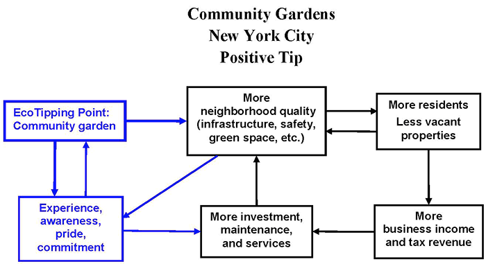
Black: Vicious cycles reversed by the EcoTipping Point, transforming those vicious cycles into virtuous cycles.
Blue: Additional benefits created by the EcoTipping Point, forming new virtuous cycles that helped to lock in the gains.
10. Ingredients for Success Powerpoint Preview
Use Previous, Next, or the slide menu to view the presentation.
11. "Student Centered How Success Works" PowerPoint Preview
This PowerPoint file contains photos for this case. Teachers can use it for PowerPoint presentations, and students can use it to create their own presentations as described in Step #10 of “Suggested Procedure” at the top of this page.
Use Previous, Next, or the slide menu to view the presentation.
12. Video:
New York City Community Gardens: Reversing Urban Decay
- Producer: Damon Wolf
- Download: video-etp-nyc.mp4
- Watch this video on YouTube
- Community gardens in New York City reversed a vicious cycle of urban decay, crime-ridden empty lots, neglect, and population flight, while producing food, flowers, and wildlife habitat. These gardens nourished the bodies and souls of 800 neighborhoods, and inspired urban community gardening across the nation.
- Download video script (PDF)